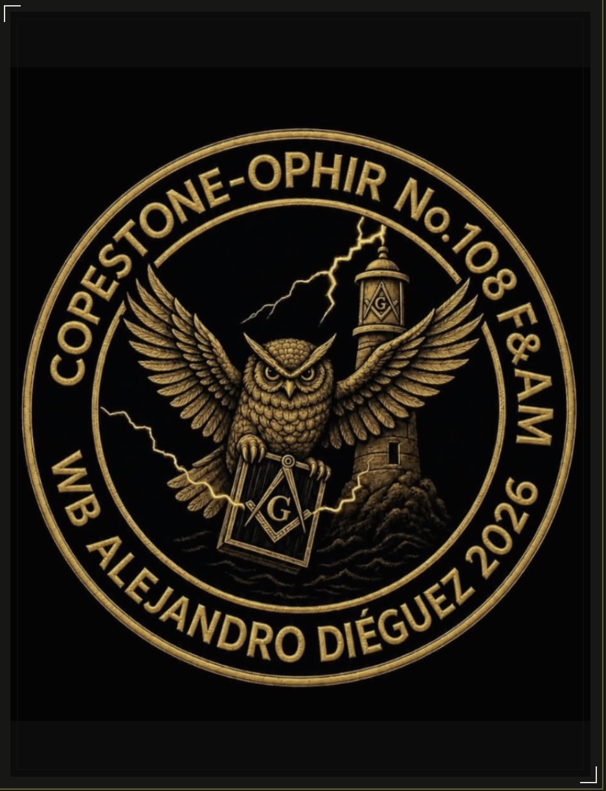
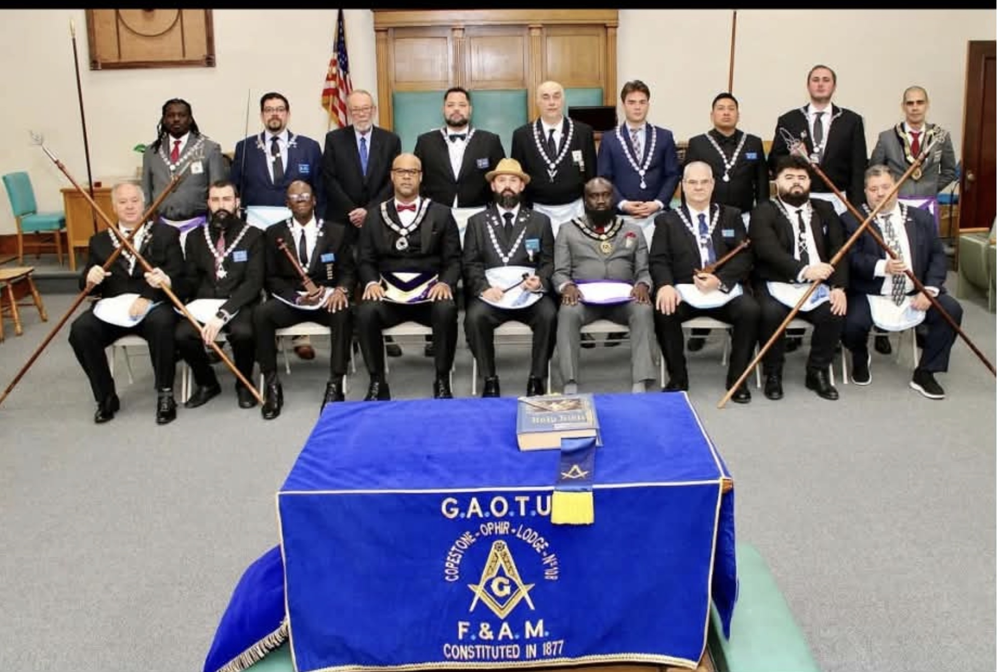
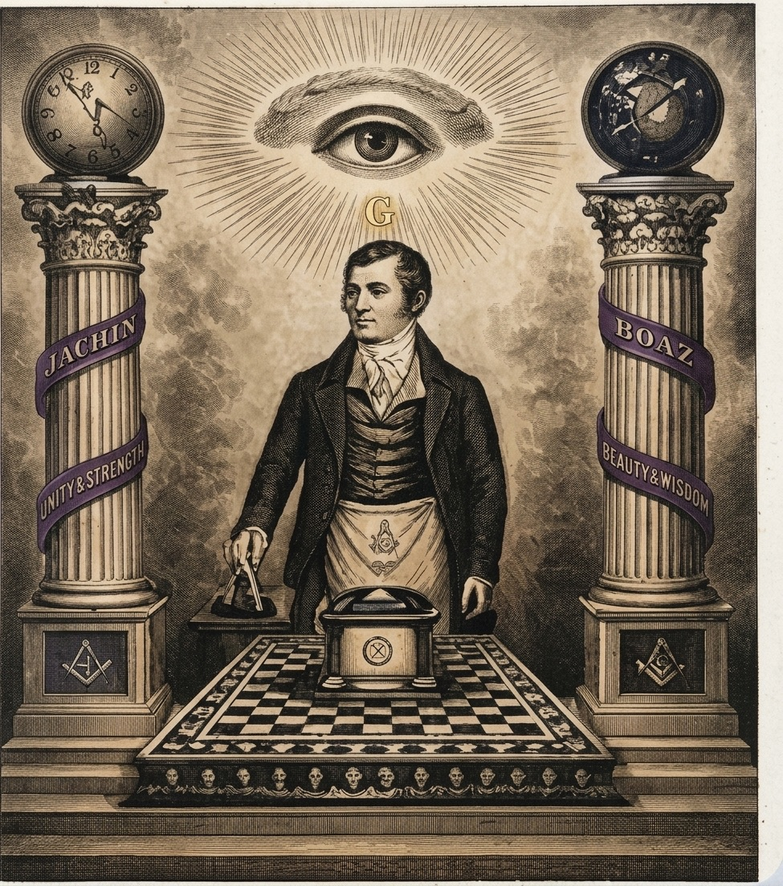

Worshipful Master
Alejandro Dieguez
Free & Accepted Masons · Kearny, New Jersey
A Masonic lodge at the heart of Kearny, carrying forward a story shaped by fellowship, service, and generations of local history.

Copestone-Ophir Lodge No. 108Kearny, New Jersey
An enduring place to belong
The Copestone Temple on Kearny Avenue was constructed in 1916.
New Jersey historic-preservation documentation Grand Lodge
Grand Lodge The Great 8th
The Great 8thPeople and memory
Historic lodge photograph — date and occasion currently unknown.
The image shows a group gathered with Copestone-Ophir Lodge regalia. Individual names and the occasion have not been confirmed.
Visit the gallery
You are welcome to get in touch
First & third
Thursdays
Meeting details can change. Please contact the Lodge Secretary before planning a visit.
Ask about a visitFrom our public calendar
No public events are currently scheduled. Please check back soon.
The 2026 officers
With gratitude to the brethren serving Copestone-Ophir Lodge No. 108. Officer titles and names are transcribed from the 2026 lodge brochure.
Alejandro Dieguez
Christopher Simmons
George Krusznis
Clarence W. Hicks, III, PM
RW Jaime Flora, GC
Joseph Bishara, PM
Senior DeaconRandy Astor
Junior DeaconCarlos Alex Jesus, PM
Sr. Master of CeremoniesJonathan Rodrigues
Jr. Master of CeremoniesJose Rodrigues
Senior StewardPeter Molinsky
Junior StewardOscar Chinhisa
ChaplainDave Lagerstrom, DWA
MarshalNicolas Luciano, PM
TylerFelipe Vargas
OrganistRW Brandon W. McCune, GMar
HistorianRW Jeremiah Hawkins, PGC

A legacy carried forwardNearly a century and a half
Documentary evidence establishes that Copestone Lodge No. 147 existed before 1900. The story continues through the Copestone Temple, built in 1916, and the later union with Ophir Lodge No. 108. Some dates remain unresolved; we are continuing the research.
Explore the historical recordA living tradition
Freemasonry is a fraternal organization whose members use shared symbols and traditions to reflect on character, integrity, and how to live well alongside others.
A lodge is a local gathering place for Masons. Members meet in fellowship, support one another, and take part in the life of their community. Its teachings are explored through a tradition of allegory and moral reflection.
Curious about what membership involves? The best place to begin is a conversation. Contact the Lodge Secretary to ask questions and learn more about Copestone-Ophir Lodge.
Questions about the lodge?
For information about meetings, visiting, or learning more about Freemasonry, contact the Lodge Secretary.